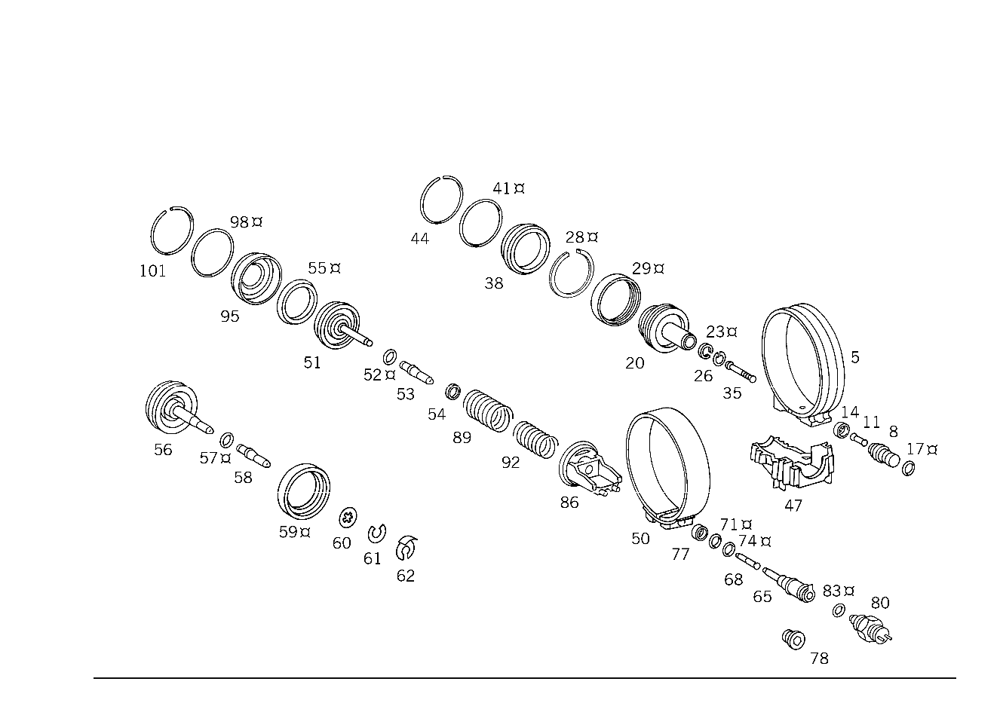

| № | Артикул | Название | Кол. | Примечание |
|---|---|---|---|---|
| 5 | A 126 270 15 62 | - ЛЕНТА ТОРМОЗНАЯ | - | |
| 5 | A 126 270 20 62 | - Тормозная лента | 1 | B 2 |
| 8 | A 126 270 20 89 | - КЛАПАН | - | |
| 8 | A 126 270 36 89 | - КЛАПАН | - | |
| 8 | A 126 270 33 89 | - Нажимной элемент | - | |
| 8 | A 124 270 01 89 | - Нажимной элемент | 1 | (НАПОРН. КОРПУС) B2 |
| 11 | A 126 277 51 75 | - Штифт | 1 | НАЖИМН. ЭЛЕМЕНТ ТОРМОЗН. ЛЕНТЫ B2 |
| 14 | A 126 277 00 58 | - ДЕРЖАТЕЛЬ УПЛОТН. КОЛЬЦА | - | |
| 14 | A 126 277 11 58 | - Крепление упл. кольца | - | |
| 14 | A 140 277 01 51 | - Проставочное кольцо | 1 | НАЖИМН. ЭЛЕМЕНТ ТОРМОЗН. ЛЕНТЫ B2 |
| 17 | A 005 997 81 48 | - Уплотнительное кольцо | - | |
| 17 | A 016 997 36 48 | - Уплотнительное кольцо | 1 | НАЖИМН. ЭЛЕМЕНТ ТОРМОЗН. ЛЕНТЫ B2 |
| 20 | A 126 270 20 32 | - ПОРШЕНЬ | - | |
| 20 | A 124 270 00 32 | - ПОРШЕНЬ | - | |
| 20 | A 107 270 00 32 | - Поршень | - | |
| 20 | A 107 270 04 32 | - Поршень | 1 | ЛЕНТА ТОРМОЗНАЯ B 2 |
| 23 | A 126 277 09 55 | - Уплотнительное кольцо | 1 | ЛЕНТА ТОРМОЗНАЯ B 2 |
| 26 | A 094 990 69 05 | - Стопорное кольцо | 1 | ЛЕНТА ТОРМОЗНАЯ B 2 |
| 28 | A 126 277 07 55 | - Уплотнительное кольцо | 1 | ПОРШЕНЬ TO 126 270 02 32 |
| 29 | A 126 277 24 55 | - Уплотнительное кольцо | - | |
| 29 | A 140 277 01 55 | - Уплотнительное кольцо | - | |
| 29 | A 140 277 04 55 | - Уплотнительное кольцо | 1 | ПОРШЕНЬ TO 124 270 00 32 |
| 35 | A 126 277 71 75 | - Штифт | 1 | ПО НЕОБХОДИМОСТИ 47.2 MM |
| 35 | A 126 277 72 75 | - Штифт | 1 | ПО НЕОБХОДИМОСТИ 48 MM |
| 35 | A 126 277 73 75 | - Штифт | 1 | ПО НЕОБХОДИМОСТИ 48.8 MM |
| 35 | A 126 277 74 75 | - Штифт | 1 | ПО НЕОБХОДИМОСТИ 49.6 MM |
| 35 | A 126 277 91 75 | - Нажимной штифт | 1 | ПО НЕОБХОДИМОСТИ 51.0 MM |
| 35 | A 126 277 92 75 | - Нажимной штифт | 1 | ПО НЕОБХОДИМОСТИ 52.5 MM |
| 38 | A 126 277 09 03 | - КРЫШКА | - | |
| 38 | A 126 277 20 03 | - Крышка | 1 | ЛЕНТА ТОРМОЗНАЯ B 2 |
| 41 | A 005 997 70 48 | - Уплотнительное кольцо | 1 | |
| 44 | A 126 994 01 35 | - Пруж. стопорное кольцо | 1 | |
| 47 | A 126 277 09 40 | - Держатель | 1 | ЛЕНТА ТОРМОЗНАЯ B 2 |
| 47 | A 126 277 73 40 | - ДЕРЖАТЕЛЬ | - | |
| 47 | A 140 277 00 40 | - Держатель | 1 | ЛЕНТА ТОРМОЗНАЯ B 2 |
| 50 | A 126 270 16 62 | - ЛЕНТА ТОРМОЗНАЯ | - | |
| 50 | A 126 270 18 62 | - Тормозная лента | 1 | B 1 |
| 51 | A 126 270 44 32 | - ПОРШЕНЬ | - | |
| 51 | A 126 270 45 32 | - ПОРШЕНЬ | - | |
| 51 | A 126 270 46 32 | - ПОРШЕНЬ | - | |
| 51 | A 126 270 47 32 | - ПОРШЕНЬ | - | |
| 51 | A 126 270 48 32 | - ПОРШЕНЬ | - | |
| 51 | A 126 270 49 32 | - ПОРШЕНЬ | - | |
| 51 | A 126 270 50 32 | - ПОРШЕНЬ | - | |
| 51 | A 126 270 51 32 | - ПОРШЕНЬ | - | |
| 51 | A 126 270 52 32 | - ПОРШЕНЬ | - | |
| 51 | A 126 270 53 32 | - ПОРШЕНЬ | - | |
| 51 | A 126 270 54 32 | - ПОРШЕНЬ | - | |
| 51 | A 126 270 55 32 | - ПОРШЕНЬ | - | |
| 51 | A 126 270 56 32 | - ПОРШЕНЬ | - | |
| 51 | A 126 270 57 32 | - ПОРШЕНЬ | - | |
| 51 | A 126 270 97 32 | - ПОРШЕНЬ | - | |
| 51 | A 124 270 05 32 | - ПОРШЕНЬ | - | |
| 51 | A 124 270 10 32 | - ПОРШЕНЬ | - | |
| 52 | A 000 997 02 48 | - Кольцевая прокладка | 1 | |
| 53 | A 126 277 89 75 | - Нажимной штифт | 1 | |
| 54 | N 000988 008026 | - Регулировочная шайба | NB | 0.2 MM |
| 54 | N 000988 008028 | - Регулировочная шайба | NB | 0.3 MM |
| 54 | N 000988 008015 | - Регулировочная шайба | NB | 0.5mm |
| 54 | N 000988 008006 | - Регулировочная шайба | NB | 1.0 MM |
| 54 | N 000988 008024 | - Регулировочная шайба | NB | 1.5mm |
| 55 | A 115 272 10 92 | - Уплотнительное кольцо | 1 | |
| 56 | A 124 270 12 32 | - Поршень | 1 | ЛЕНТА ТОРМОЗНАЯ B 1 |
| 57 | A 000 997 02 48 | - Кольцевая прокладка | 1 | ПОРШЕНЬ ТОРМ.ЛЕНТЫ B 1 |
| 58 | A 126 277 94 75 | - Нажимной штифт | 1 | ПОРШЕНЬ ТОРМ.ЛЕНТЫ B 1 |
| 59 | A 126 277 25 55 | - Уплотнительное кольцо | - | |
| 59 | A 140 277 03 55 | - Уплотнительное кольцо | 1 | ПОРШЕНЬ ТОРМ.ЛЕНТЫ B 1 |
| 60 | A 126 993 20 26 | - ПРУЖИНА ДИСКОВАЯ | - | |
| 60 | A 140 993 14 26 | - Тарельчатая пружина | 1 | ПОРШЕНЬ ТОРМ.ЛЕНТЫ B 1 |
| 61 | A 126 272 13 73 | - Пруж. стопорное кольцо | 1 | ПОРШЕНЬ ТОРМ.ЛЕНТЫ B 1 |
| 62 | A 126 277 29 73 | - предохранитель | 1 | B 1 |
| 65 | A 123 270 01 89 | - Клапан | 1 | (НАПОРН. КОРПУС) B 1 |
| 68 | A 126 277 09 75 | - Штифт | 1 | |
| 71 | A 005 997 80 48 | - Кольцевая прокладка | 1 | |
| 74 | A 010 997 08 45 | - УПЛОТНИТ. КОЛЬЦО | - | |
| 74 | A 016 997 34 48 | - Кольцевая прокладка | 1 | |
| 77 | A 126 277 00 58 | - ДЕРЖАТЕЛЬ УПЛОТН. КОЛЬЦА | - | |
| 77 | A 126 277 11 58 | - Крепление упл. кольца | - | |
| 77 | A 140 277 01 51 | - Проставочное кольцо | 1 | |
| 78 | A 126 997 02 30 | - Резьбовая пробка | 1 | (НАПОРН. КОРПУС) B 1 |
| 86 | A 126 277 57 40 | - Держатель | - | |
| 86 | A 126 277 79 40 | - ДЕРЖАТЕЛЬ | - | |
| 86 | A 140 277 08 40 | - Держатель | - | |
| 86 | A 140 277 10 40 | - Держатель | 1 | ЛЕНТА ТОРМОЗНАЯ B 1 |
| 89 | A 126 993 01 01 | - пружина | 1 | ПОРШЕНЬ ТОРМ.ЛЕНТЫ B 1; 95.3 MM |
| 92 | A 126 993 57 01 | - пружина | 1 | ПОРШЕНЬ ТОРМ.ЛЕНТЫ B 1; 111.6 MM |
| 95 | A 126 277 02 03 | - КРЫШКА | - | |
| 95 | A 126 270 02 08 | - Крышка | 1 | ПОРШЕНЬ ТОРМ.ЛЕНТЫ B 1 TO 124 270 10 32 |
| 98 | A 005 997 86 48 | - Уплотнительное кольцо | 1 | |
| 101 | A 126 994 08 35 | - Пруж. стопорное кольцо | 1 |
Позиций: 90 · подписано на схемах: 90 · колесо — плавный зум в курсор, перетаскивание — пан, двойной клик — зум, клик по артикулу — скопировать.